项目背景
该项目面向企微 AI 工作区场景，聚焦两个高频任务：招聘数字人和合同审查数字人。目标是把原本依赖人工阅读、人工判断、人工确认的流程，转化为 AI 辅助分析 + 人工复核的工作方式，提高处理效率，并让输出结果更结构化、更易于确认和沉淀。
围绕企微 AI 工作区中的招聘与合同审查场景，接入多 Agent 协作流程，将原本分散的人工处理链路转化为“AI 分析 + 人工复核”的结构化工作流。
该项目面向企微 AI 工作区场景，聚焦两个高频任务：招聘数字人和合同审查数字人。目标是把原本依赖人工阅读、人工判断、人工确认的流程，转化为 AI 辅助分析 + 人工复核的工作方式，提高处理效率，并让输出结果更结构化、更易于确认和沉淀。
该演示视频展示了招聘数字人从 HR 的一句自然语言需求出发，逐步完成岗位需求澄清、JD 生成、招聘平台筛选、候选人匹配评分、邀约跟进和面试时间协调的完整流程。视频内容用于作品集展示，涉及的候选人信息和账号信息已按演示场景脱敏处理。
以下截图来自招聘数字人在企微 AI 工作区中的演示流程，用于展示真实交互链路。截图内容已按作品集展示场景脱敏处理。
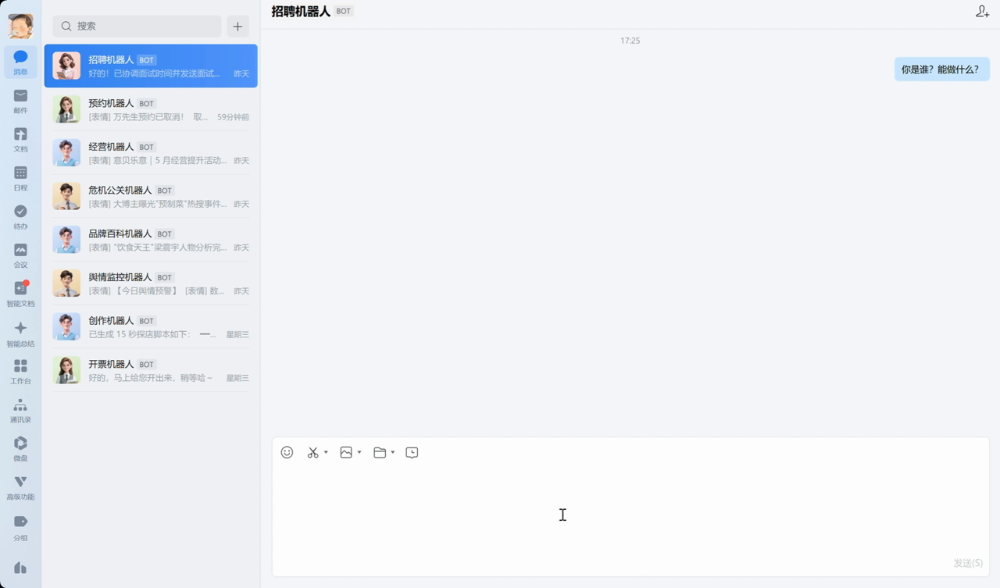
机器人先明确自身能力边界，覆盖需求梳理、JD 产出、简历筛选、邀约跟进和数据复盘。
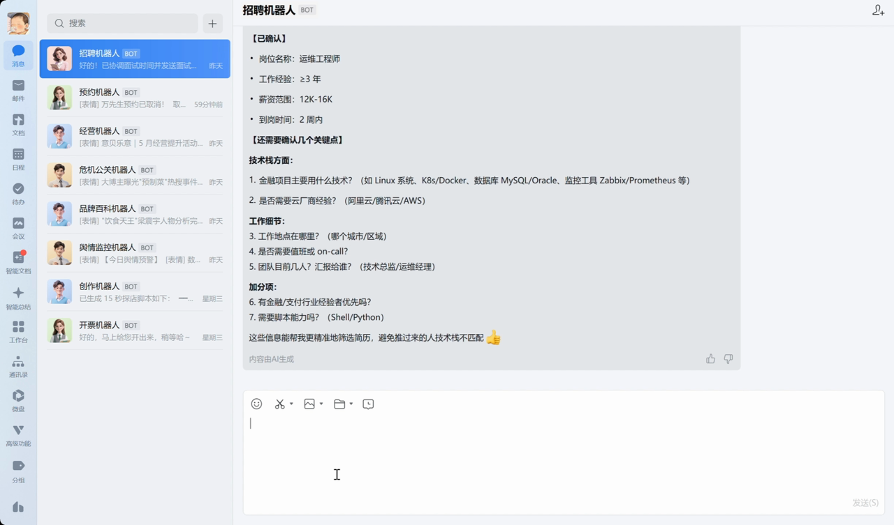
HR 输入招聘需求后，机器人继续追问岗位名称、薪资范围、技术栈、金融经验、值班要求等关键条件。
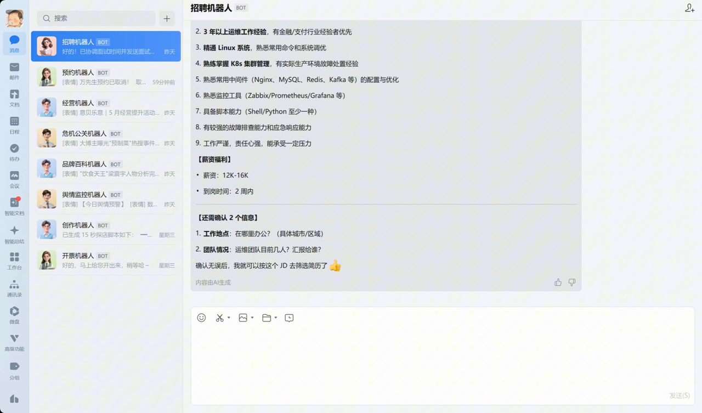
机器人将补充信息整理成岗位职责、任职要求、薪资福利和岗位信息，并在确认后进入简历筛选阶段。
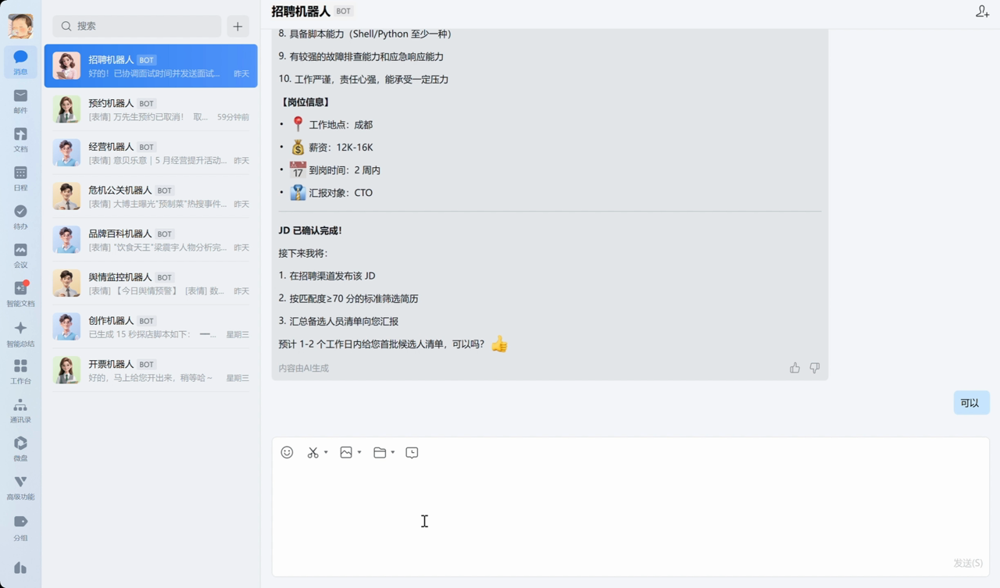
机器人对接招聘平台，按筛选标准搜索 127 份简历，并输出匹配度 ≥ 70 分的候选人清单。
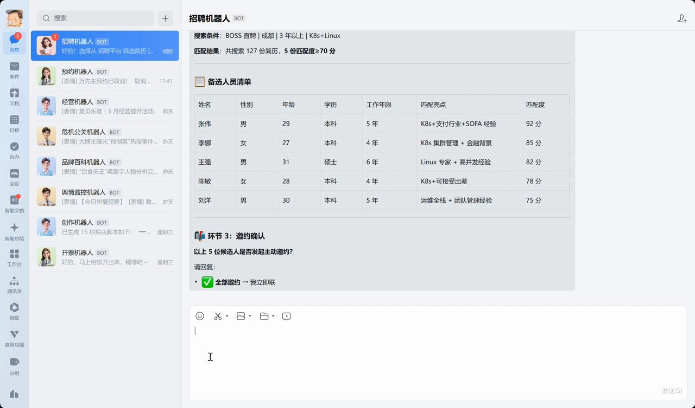
机器人继续跟进候选人邀约状态，协助确认面试时间，并输出已完成事项和后续提醒。
该方案不是简单把模型接入工作区，而是将任务拆分为多个可协作的 Agent 节点，并通过统一输入、结构化输出和人工复核机制，把模型能力纳入可控流程。项目中实际使用了多 Agent 协作流程，而不是停留在概念方案。
| 评分维度 | 权重 | 产品说明 |
|---|---|---|
| 岗位硬性条件匹配 | 25% | 学历、经验年限、基础门槛是否满足。 |
| 核心技能匹配 | 25% | 候选人技能与岗位关键要求的对应关系。 |
| 项目 / 行业相关性 | 20% | 过往项目或行业经验是否能支撑岗位需求。 |
| 经验年限匹配 | 15% | 候选人经验年限与岗位级别是否匹配。 |
| 风险因素 | 15% | 识别频繁跳槽、能力断层、信息缺失等风险。 |
| 风险等级 | 规则说明 |
|---|---|
| 高风险 | 金额、付款条件、违约责任、责任归属、合同期限等关键权益变化。 |
| 中风险 | 履约方式、交付节点、验收标准、条款表达变化但会影响执行理解。 |
| 低风险 | 措辞、格式、非关键描述调整。 |
在测试样例中支持识别 40+ 处条款差异。
以下为公开展示版，用于说明我如何把场景需求拆成可实现、可验收的产品条目。
| 数字人 | 输入字段 | 输出字段 | 输出要求 |
|---|---|---|---|
| 招聘数字人 | 岗位需求、候选人信息 | 匹配分、理由、亮点、风险、建议 | 结构化、可解释、避免模糊结论 |
| 合同审查数字人 | 原合同、签回合同、审查模式 | 差异点、风险等级、说明、建议、原文位置 | 分级明确、差异可定位、表达克制 |
由于招聘与合同审查场景均为高判断成本流程，原型重点展示 AI 如何完成信息结构化、结果解释、人工复核和下一步动作推进。
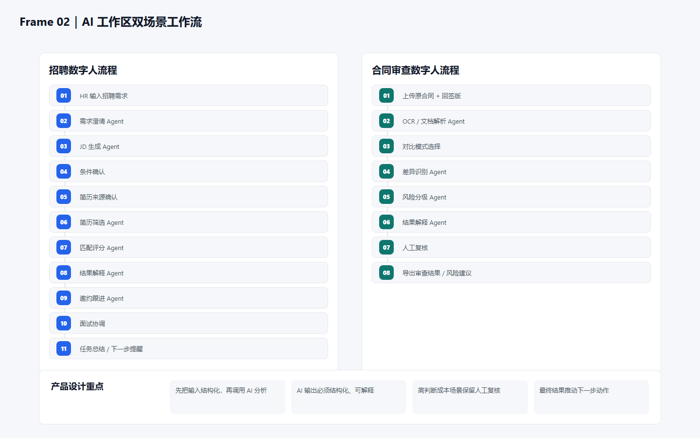
用双泳道展示招聘与合同审查如何从输入、AI 分析、人工复核推进到下一步动作。
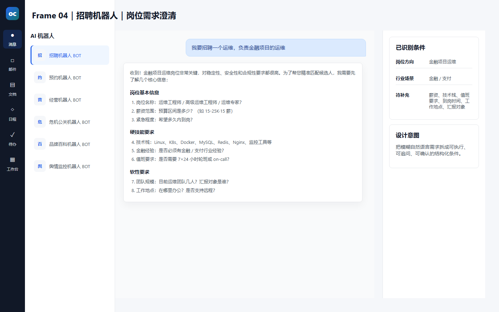
把 HR 的模糊自然语言需求拆解为薪资、技术栈、值班要求等可确认字段。
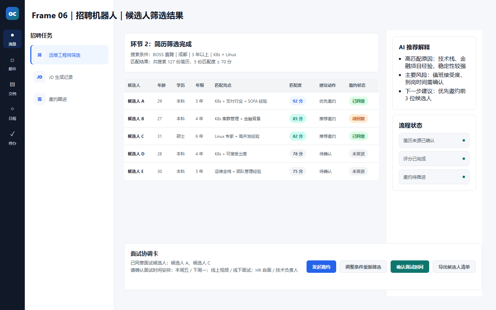
展示 127 份简历筛选后的候选人匹配分、匹配亮点、邀约状态和面试协调入口。
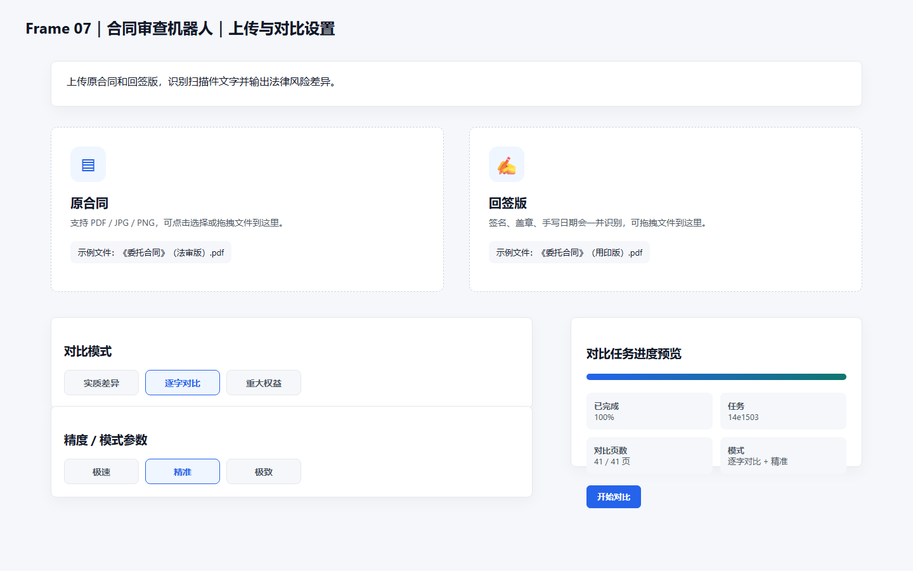
通过原合同、回签版、对比模式和精度参数，明确合同审查任务的输入结构。
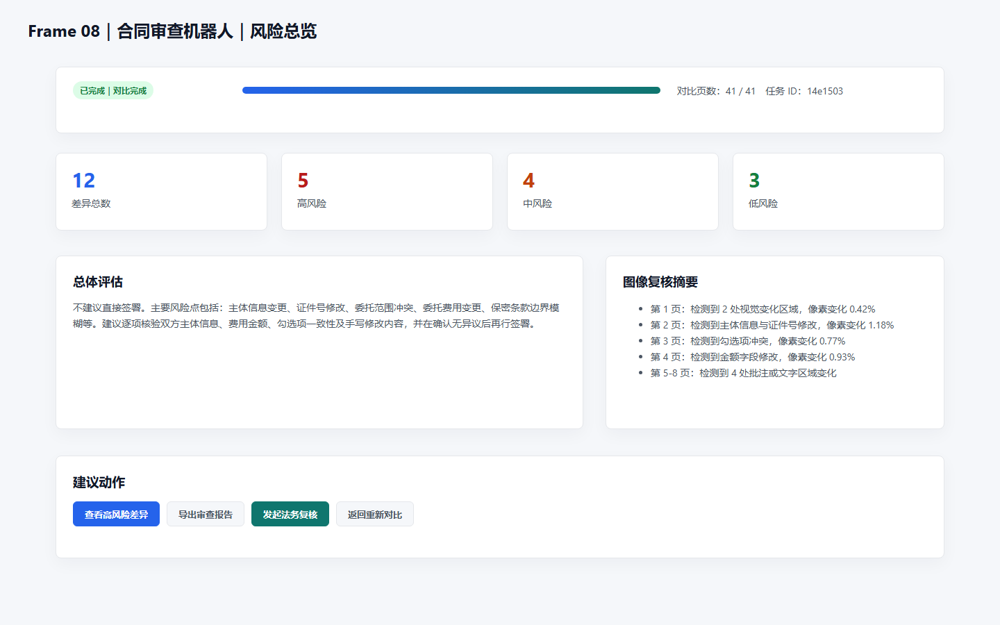
将差异总数、高中低风险和总体评估聚合成法务可快速判断的结果页。
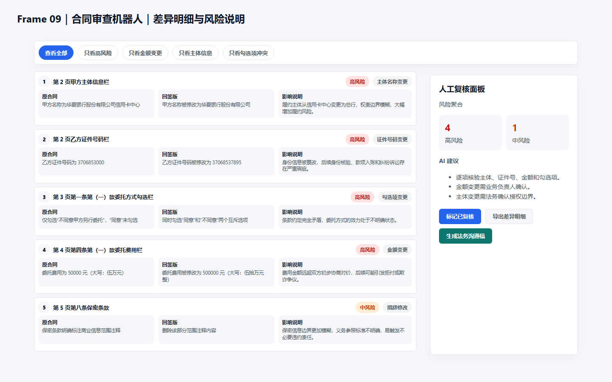
用原合同、回签版、影响说明三栏对照，支持人工复核和后续法务沟通。
| 模块 | 验收标准 |
|---|---|
| 招聘数字人 | 支持岗位需求输入、评分结果输出、人工确认。 |
| 合同审查数字人 | 支持差异识别、风险分级、结果导出。 |
| 输出结构 | 字段完整、结果可解释。 |
| 人工复核 | 可查看 AI 结论并确认 / 调整。 |
| 页面交互 | 状态清晰、结果区分明晰。 |
这个项目让我更明确地意识到：AI 产品不是把模型接进去就结束了，真正关键的是如何把模型输出变成用户能理解、能复核、能继续决策的结构化结果。在招聘和合同审查这类高判断成本场景里，流程设计、字段设计、结果解释和人工确认链路，往往比“是否用了模型”本身更重要。